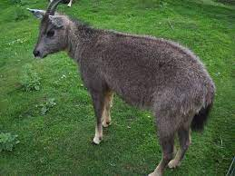

Kalesar National Park
Location : Yamunanagar district of Haryana, 122 km from Chandigarh.
Established in : 2003
Area : 53 km2
Flora : 53% dense forest, 38% open forest, 9% scrub. Total forest cover is about 71%. Trees like
sal, Semul, Amaltas and Bahera, khair, shisham, sain, jhingan, chhal are found.
Fauna : Indian leopard, black panther, leopard cat, rusty-spotted cat, jungle cat, Indian jackal,
Asiatic elephant, chital, sambar, barking deer, goral, nilgai, Indian crested porcupine, small Indian civet, common palm
civet, gray langur, rhesus macaque, Indian gray mongoose, boar and Indian hare.

Kalesar National Park

Indian hare

Goral
Sultanpur National Park
Location : Sultanpur village on Gurugram-Jhajjar highway, 15 km from Gurugram, Haryana and 50 km
from Delhi
Established in : 1991
Area : 1.43 km2
Flora : The vegetation of this park is tropical and dry deciduous and the flora include grasses, dhok,
khair, tendu, ber, jamun, banyan tree, neem, berberis, Acacia nilotica and Acacia tortilis.
Fauna : Birds include the common hoopoe, paddyfield pipit, purple sunbird, little cormorant,
Indian cormorant, common spoonbill, grey francolin, black francolin, Indian roller, white-throated kingfisher,
Indian spot-billed duck, painted stork, black-necked stork, white ibis, black-headed ibis, little egret, great
egret, cattle egret, crested lark, red-vented bulbul, rose-ringed parakeet, red-wattled lapwing, shikra, Eurasian
collared dove, red collared dove, laughing dove, spotted owlet, rock pigeon, magpie robin, greater coucal, weaver
bird, bank mynah, common mynah and Asian green bee-eater.

Sultanpur National Park

Sarus crane

White-throated kingfisher